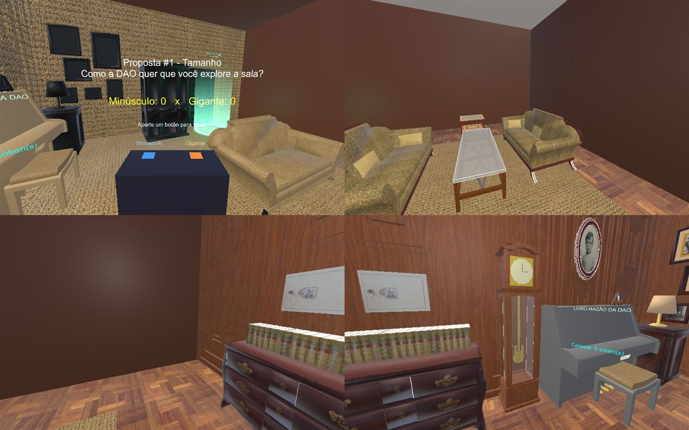
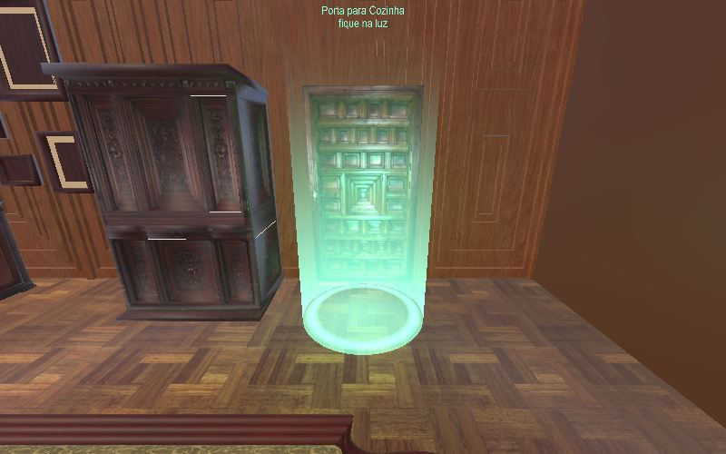

1 · Sala de Estar · proposta “Tamanho” · sai pela porta
Tamanho7,2 × 7,1 m
Pé-direito3,9 m
Triângulos135 mil
Saídaporta entalhada
Votação: A = Minúsculo (escala 0,15, olhos a ~24 cm do chão) · B = Gigante (escala 2,2, limitada pelo teto).
Ideia extra: esconder um token embaixo do sofá ou do piano, que só dá para ver e pegar minúsculo.
Corrigido: modelo em polegadas (escala 0,0254), sem teto (adicionado) e com dois lados sem parede (fechados com parede de madeira). Malhas de contorno do SketchUp não recebem collider.